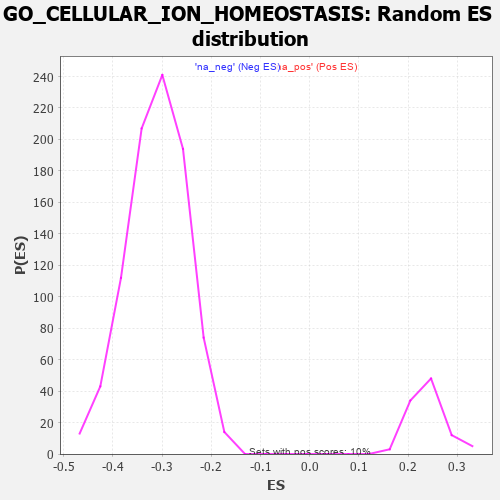

| | | Dataset | 7d |
| Phenotype | NoPhenotypeAvailable |
| Upregulated in class | na_neg |
| GeneSet | GO_CELLULAR_ION_HOMEOSTASIS |
| Enrichment Score (ES) | -0.53089434 |
| Normalized Enrichment Score (NES) | -1.7096194 |
| Nominal p-value | 0.0 |
| FDR q-value | 0.035424992 |
| FWER p-Value | 0.913 |
Table: GSEA Results Summary
 Fig 1: Enrichment plot: GO_CELLULAR_ION_HOMEOSTASIS
Fig 1: Enrichment plot: GO_CELLULAR_ION_HOMEOSTASIS
Profile of the Running ES Score & Positions of GeneSet Members on the Rank Ordered List
| PROBE | GENE SYMBOL | GENE_TITLE | RANK IN GENE LIST | RANK METRIC SCORE | RUNNING ES | CORE ENRICHMENT | | 1 | ADCY8 | | | 124 | 1.418 | 0.0026 | No |
| 2 | CSRP3 | | | 161 | 1.186 | 0.0134 | No |
| 3 | THADA | | | 253 | 0.931 | 0.0138 | No |
| 4 | CLN5 | | | 346 | 0.751 | 0.0118 | No |
| 5 | BAX | | | 387 | 0.711 | 0.0160 | No |
| 6 | LRP1 | | | 470 | 0.648 | 0.0139 | No |
| 7 | GLRX3 | | | 813 | 0.529 | -0.0228 | No |
| 8 | P2RY1 | | | 1416 | 0.407 | -0.0941 | No |
| 9 | SCO1 | | | 1536 | 0.385 | -0.1042 | No |
| 10 | JPH1 | | | 1741 | 0.347 | -0.1257 | No |
| 11 | COX19 | | | 1807 | 0.336 | -0.1296 | No |
| 12 | SMAD4 | | | 1860 | 0.326 | -0.1320 | No |
| 13 | MCUR1 | | | 1953 | 0.313 | -0.1397 | No |
| 14 | MICU1 | | | 1954 | 0.313 | -0.1356 | No |
| 15 | CCR4 | | | 1959 | 0.312 | -0.1321 | No |
| 16 | ROGDI | | | 2633 | 0.207 | -0.2151 | No |
| 17 | CUL1 | | | 2735 | 0.193 | -0.2254 | No |
| 18 | CAND1 | | | 2845 | 0.177 | -0.2370 | No |
| 19 | CLN6 | | | 2847 | 0.177 | -0.2348 | No |
| 20 | ERO1A | | | 2925 | 0.162 | -0.2425 | No |
| 21 | ISCU | | | 2989 | 0.151 | -0.2486 | No |
| 22 | CHP1 | | | 3089 | 0.138 | -0.2594 | No |
| 23 | SMAD3 | | | 3303 | 0.105 | -0.2852 | No |
| 24 | KCTD7 | | | 3417 | 0.088 | -0.2984 | No |
| 25 | CDK5 | | | 3480 | 0.080 | -0.3052 | No |
| 26 | ABCB7 | | | 3530 | 0.071 | -0.3106 | No |
| 27 | GPR18 | | | 3578 | 0.063 | -0.3157 | No |
| 28 | CHERP | | | 3587 | 0.062 | -0.3159 | No |
| 29 | MAPK3 | | | 3589 | 0.062 | -0.3153 | No |
| 30 | RIC3 | | | 3629 | 0.055 | -0.3195 | No |
| 31 | FIS1 | | | 3654 | 0.051 | -0.3219 | No |
| 32 | SKP1 | | | 3663 | 0.049 | -0.3223 | No |
| 33 | HTR1B | | | 3745 | 0.035 | -0.3321 | No |
| 34 | ATG5 | | | 4051 | -0.016 | -0.3708 | No |
| 35 | ABL1 | | | 4125 | -0.027 | -0.3797 | No |
| 36 | PLCE1 | | | 4127 | -0.028 | -0.3795 | No |
| 37 | TMCO1 | | | 4451 | -0.085 | -0.4195 | No |
| 38 | NEDD8 | | | 4465 | -0.087 | -0.4200 | No |
| 39 | LRRK2 | | | 4467 | -0.087 | -0.4190 | No |
| 40 | JPH3 | | | 4481 | -0.091 | -0.4195 | No |
| 41 | NPTN | | | 4519 | -0.098 | -0.4229 | No |
| 42 | MICU3 | | | 4571 | -0.110 | -0.4280 | No |
| 43 | LETM1 | | | 4644 | -0.127 | -0.4355 | No |
| 44 | NMUR2 | | | 4646 | -0.127 | -0.4340 | No |
| 45 | ITPR1 | | | 4661 | -0.130 | -0.4341 | No |
| 46 | CLCN3 | | | 4678 | -0.134 | -0.4344 | No |
| 47 | PLCG1 | | | 4770 | -0.151 | -0.4440 | No |
| 48 | MYO5A | | | 4787 | -0.155 | -0.4440 | No |
| 49 | P2RX4 | | | 4813 | -0.161 | -0.4451 | No |
| 50 | ACKR4 | | | 4981 | -0.194 | -0.4638 | No |
| 51 | DMXL1 | | | 5004 | -0.198 | -0.4641 | No |
| 52 | PDPK1 | | | 5043 | -0.207 | -0.4662 | No |
| 53 | DRD2 | | | 5088 | -0.221 | -0.4690 | No |
| 54 | GPR4 | | | 5219 | -0.250 | -0.4823 | No |
| 55 | RAB7A | | | 5302 | -0.271 | -0.4892 | No |
| 56 | NPY2R | | | 5331 | -0.281 | -0.4891 | No |
| 57 | ITPR3 | | | 5361 | -0.288 | -0.4891 | No |
| 58 | GRIN1 | | | 5381 | -0.291 | -0.4877 | No |
| 59 | DLG4 | | | 5388 | -0.293 | -0.4847 | No |
| 60 | VDR | | | 5517 | -0.325 | -0.4968 | No |
| 61 | ABCG2 | | | 5556 | -0.335 | -0.4973 | No |
| 62 | CALCR | | | 5730 | -0.386 | -0.5143 | No |
| 63 | CIB2 | | | 5774 | -0.398 | -0.5146 | No |
| 64 | TRPC6 | | | 5784 | -0.401 | -0.5106 | No |
| 65 | ANXA7 | | | 5827 | -0.413 | -0.5106 | No |
| 66 | CXCR5 | | | 5954 | -0.456 | -0.5207 | No |
| 67 | TRPC3 | | | 6035 | -0.483 | -0.5246 | Yes |
| 68 | PPT1 | | | 6038 | -0.485 | -0.5186 | Yes |
| 69 | CALR | | | 6077 | -0.499 | -0.5170 | Yes |
| 70 | ABCB6 | | | 6106 | -0.507 | -0.5140 | Yes |
| 71 | STIM1 | | | 6169 | -0.528 | -0.5150 | Yes |
| 72 | ATP7B | | | 6194 | -0.535 | -0.5112 | Yes |
| 73 | RGN | | | 6233 | -0.547 | -0.5089 | Yes |
| 74 | XPR1 | | | 6250 | -0.555 | -0.5038 | Yes |
| 75 | AP3D1 | | | 6261 | -0.558 | -0.4978 | Yes |
| 76 | GALR2 | | | 6355 | -0.599 | -0.5019 | Yes |
| 77 | TRPM4 | | | 6390 | -0.612 | -0.4983 | Yes |
| 78 | TRPV4 | | | 6515 | -0.668 | -0.5054 | Yes |
| 79 | P2RX5 | | | 6576 | -0.699 | -0.5040 | Yes |
| 80 | CLN3 | | | 6580 | -0.699 | -0.4953 | Yes |
| 81 | ARF1 | | | 6583 | -0.701 | -0.4865 | Yes |
| 82 | TRPM8 | | | 6781 | -0.800 | -0.5012 | Yes |
| 83 | PTH1R | | | 6845 | -0.839 | -0.4984 | Yes |
| 84 | HEXB | | | 6894 | -0.864 | -0.4933 | Yes |
| 85 | CCR2 | | | 7003 | -0.939 | -0.4949 | Yes |
| 86 | FBXL5 | | | 7046 | -0.965 | -0.4877 | Yes |
| 87 | GRM5 | | | 7053 | -0.969 | -0.4760 | Yes |
| 88 | CFTR | | | 7143 | -1.030 | -0.4740 | Yes |
| 89 | CNGB1 | | | 7222 | -1.096 | -0.4697 | Yes |
| 90 | ANK2 | | | 7298 | -1.170 | -0.4641 | Yes |
| 91 | GRN | | | 7319 | -1.194 | -0.4512 | Yes |
| 92 | TRPM1 | | | 7324 | -1.197 | -0.4362 | Yes |
| 93 | GRM1 | | | 7404 | -1.272 | -0.4298 | Yes |
| 94 | VAPB | | | 7482 | -1.378 | -0.4217 | Yes |
| 95 | GRIK2 | | | 7552 | -1.471 | -0.4115 | Yes |
| 96 | CALM1 | | | 7567 | -1.499 | -0.3938 | Yes |
| 97 | TRPV6 | | | 7569 | -1.502 | -0.3745 | Yes |
| 98 | TTPA | | | 7575 | -1.516 | -0.3555 | Yes |
| 99 | TRPA1 | | | 7625 | -1.608 | -0.3409 | Yes |
| 100 | PKD1 | | | 7628 | -1.611 | -0.3203 | Yes |
| 101 | MCU | | | 7644 | -1.637 | -0.3011 | Yes |
| 102 | TRPM2 | | | 7680 | -1.712 | -0.2833 | Yes |
| 103 | RHAG | | | 7701 | -1.769 | -0.2630 | Yes |
| 104 | BOK | | | 7715 | -1.817 | -0.2411 | Yes |
| 105 | P2RY8 | | | 7750 | -1.912 | -0.2207 | Yes |
| 106 | TRPM7 | | | 7761 | -1.936 | -0.1969 | Yes |
| 107 | PDE4D | | | 7764 | -1.944 | -0.1720 | Yes |
| 108 | PKD2 | | | 7822 | -2.167 | -0.1512 | Yes |
| 109 | GRIA1 | | | 7836 | -2.260 | -0.1236 | Yes |
| 110 | CALM3 | | | 7869 | -2.525 | -0.0950 | Yes |
| 111 | FYN | | | 7881 | -2.622 | -0.0624 | Yes |
| 112 | CAV3 | | | 7896 | -2.739 | -0.0287 | Yes |
| 113 | NPSR1 | | | 7913 | -2.947 | 0.0074 | Yes |
Table: GSEA details [plain text format]

Fig 2: GO_CELLULAR_ION_HOMEOSTASIS: Random ES distribution
Gene set null distribution of ES for GO_CELLULAR_ION_HOMEOSTASIS